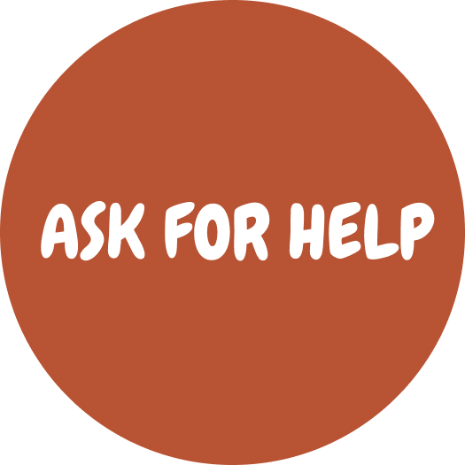
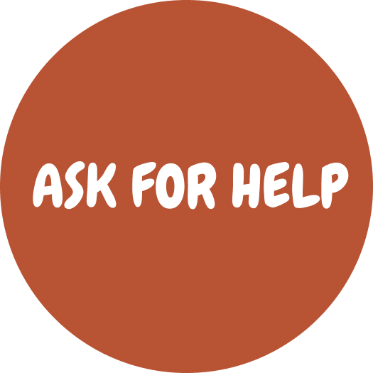

DEPRESSION
SLEEP DISORDER
STRESS DISORDER
EATING DISORDER
ANXIETY DISORDER
FUN TIME
STRESS DISORDER
Click on the circles to learn more about stress disorder
Stress and Trauma:
Emotional and psychological trauma is the result of extraordinarily stressful events that shatter your sense of security, making you feel helpless in a dangerous world. Psychological trauma can leave you struggling with upsetting emotions, memories, and anxiety that won’t go away. It can also leave you feeling numb, disconnected, and unable to trust other people.
Traumatic experiences often involve a threat to life or safety, but any situation that leaves you feeling overwhelmed and isolated can result in trauma, even if it doesn’t involve physical harm. It’s not the objective circumstances that determine whether an event is traumatic, but your subjective emotional experience of the event. The more frightened and helpless you feel, the more likely you are to be traumatized.
Common myths about stress:
Myth 1: Stress is the same for everyone.
Not true. We don’t all experience stress the same way. It’s different for everybody. You may be stressed out by a high-pressure job, while your coworker thrives on it.
Myth 2: Stress is always bad for you.
While we might think that no stress would lead to happiness and health, it’s not true. Stress itself — especially a little stress — keeps life in balance. What’s important is how we manage it. When we handle it well, we are productive and happy. Mismanage it, and we may fail or become even more stressed.
Myth 3: Stress is everywhere — you can’t do anything about it.
It’s true that stress is all around us, but you can plan your life so you’re not overwhelmed by it. An effective strategy is to set priorities and work on solving simple problems first, before tackling more complex challenges. When we succumb to stress, it’s hard to prioritize because all problems seem equally troubling.
Myth 4: The most popular stress-reducing techniques are the best.
Again, not true. Although popular magazines may claim to have the answers, no universally effective stress reduction techniques exist. We all have different lives, situations and reactions. A comprehensive stress management program tailored to your unique needs will work best. And don’t overlook self-help books. Many offer successful stress management techniques, which can help if you follow the program faithfully.
Myth 5: No symptoms, no stress.
Just because you don’t have symptoms doesn’t mean you’re not experiencing stress. And if you’re masking your symptoms with medication, you may miss the signals you need to reduce the strain on your physiological and psychological systems. Even though stress is a psychological effect, chances are you’ll experience it in a physical way. Common physical signs include feeling anxious, run down or short of breath. Feeling overwhelmed, disorganized and having difficulty concentrating are frequent mental signs of stress.
Myth 6: Only major stress symptoms require attention.
“Minor” symptoms — like headaches or stomach acid — are early warnings that your life is getting out of hand, and should not be ignored. Don’t wait for a major stress symptom, such as a heart attack, or it may be too late. Making lifestyle changes, like more exercise or a healthier diet, will pay big benefits in time, money and well-being.
Symptoms of stress:
The body’s autonomic nervous system controls your heart rate, breathing, vision changes and more. Its built-in stress response, the “fight-or-flight response,” helps the body face stressful situations.
When a person has long-term (chronic) stress, continued activation of the stress response causes wear and tear on the body. Physical, emotional and behavioral symptoms develop.
Physical symptoms of stress include:
- Aches and pains.
- Chest pain or a feeling like your heart is racing.
- Exhaustion or trouble sleeping.
- Headaches, dizziness or shaking.
- High blood pressure.
- Muscle tension or jaw clenching.
- Stomach or digestive problems.
- Trouble having sex.
- Weak immune system.
Stress can lead to emotional and mental symptoms like:
- Anxiety or irritability.
- Depression.
- Panic attacks.
- Sadness.
Often, people with chronic stress try to manage it with unhealthy behaviors, including:
- Drinking alcohol too much or too often.
- Gambling.
- Overeating or developing an eating disorder.
- Participating compulsively in sex, shopping or internet browsing.
- Smoking.
- Using drugs.
Stress among college students:
Some stress is healthy and even motivating when it arises under the proper circumstances, but in recent years Americans are experiencing a profound rise in stress levels resulting from the uncertainty and physical dangers of the novel coronavirus, which has claimed more than 223,000 lives in the U.S. alone.
The problem of chronic and unhealthy levels of stress is at its worst among college-age students, according to some research. While most adults report experiencing elevated stress due to the COVID-19 pandemic, adults ages 18 to 23 are experiencing the highest stress levels, according to August survey findings released in October by the American Psychological Association.
In the study, Stress in America 2020, nearly 90% of this age group reported education as a significant source of stress. College students in the U.S. faced the brunt of many uncertainties following the initial virus outbreaks in February and March as colleges rushed to close campuses, evict students from residence halls and transition to online learning.
Continued uncertainty regarding the 2020-2021 school year and a feeling that planning for the future is impossible because of the pandemic also contribute greatly to stress in this group.
So, you are not alone!
Tips for self-help if you are affected by stress:
Tip 1. Build and Maintain Social Connections
Socializing can help humans release stress. Experts say having fun and finding joy in life keep stress levels manageable, and socializing is particularly important developmentally for young adults.
Talking about feelings of stress can also help college students cope. With so many individuals struggling to adjust to life during the coronavirus pandemic, simply connecting about these stressful challenges can be a source of relief.
Tip 2. Sleep, Eat Well and Exercise
Maintaining healthy habits can help college students better manage any stressor that arises. Although it might be challenging in a tight schedule, even a walk from home to campus could help alleviate some stressful feelings.
Getting outdoors and being active can also help students limit their screen time and use of social media, because experts say social media use can ultimately lead to more stress rather than a feeling of contentedness.
Tip 3. Have a stress outlet
Having a healthy outlet to turn to in times of stress can help calm your mind and clarify how to move forward in a stressful situation. Things like a hobby, social club, physical exercise can all be outlets for relieving stress.
Tip 4. Practice positive thinking
Research has shown that there are numerous benefits to positive thinking when you’re feeling stressed out. Positive thoughts can improve physical well-being and provide a clear mind. When you feel yourself thinking negatively, counteract these thoughts by giving yourself positive encouragement. Positive reinforcement during stressful times can lessen the chance of developing chronic stress.
Tip 5. Try mindfulness exercises
College students are busy and constantly distracted, which makes it challenging to be present in the moment. Mindfulness helps to drown out the background noise and increase awareness. Meditation is a great way to practice mindfulness, but you can also incorporate it into daily activities. This will not only improve memory and focus but is also a beneficial way to relieve stress.
Tip 6. Start journaling
Journaling can be very therapeutic and lower stress levels. Write down your daily thoughts and feelings or keep a stress journal. This type of self-reflection can help you find a pattern of regular stress in your life and examine how you deal with it. This will help put things into perspective so that you can effectively manage these stressors.
PLEASE ask for help immediately, if:
You are:
- Having suicidal thoughts;
- Might harm yourself or others;
- Feeling physically uncomfortable.
Carnegie Mellon on campus resources:
- Call Counseling and Psychological Services (CaPS) at 412-268-2922;
- Reach out to your advisor;
- Schedule a meeting with University Health Services (UHS) for stress consultations, substance use & recovery services, and health advice at 421-268-2157.
Click here to find the nearest mental health facility to you!
We are here! Let us help.
 

 DEPRESSION
SLEEP DISORDER
STRESS DISORDER
EATING DISORDER
ANXIETY DISORDER
FUN TIME
DEPRESSION
SLEEP DISORDER
STRESS DISORDER
EATING DISORDER
ANXIETY DISORDER
FUN TIME